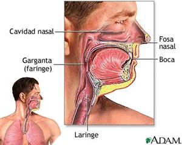
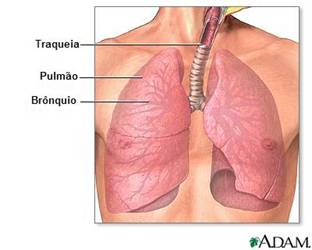
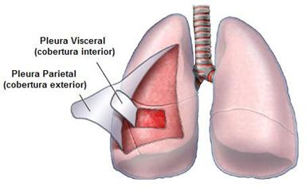

patologia respiratória do tipo restritivo.
De um ponto de vista anatómico, o aparelho respiratório é, normalmente, divido em 2 zonas: as vias aéreas e os pulmões.
As vias aéreas são constituídas pelas fossas nasais, a boca, a faringe, a laringe, a traqueia e toda a árvore brônquica. Estas desempenham um papel fundamental na climatização (aquecimento e humedecimento) e purificação do ar inspirado. Adicionalmente estão na origem de dois importantes reflexos, os reflexos da tosse e do espirro, responsáveis pela remoção de corpos estranhos e/ou irritantes das vias respiratórias.
O nariz estende-se posteriormente até ao limite da pele com a membrana mucosa e as origens das terminações nervosas do nervo olfactivo.

A porção superior do nariz é suportada pelos ossos e a inferior é suportada pela cartilagem. As aberturas do nariz, que se designam por narinas, são separadas pelo septo nasal. Os cornetos são elevações arredondadas revestidas de mucosa, formam as paredes laterais das cavidades nasais e fornecem uma grande área de superfície para aquecimento, humidificação e filtração do ar inspirado. Devido à rica vascularização dos cornetos, o ar inalado é aquecido, quase à temperatura corporal, quando chega à nasofaringe posterior. A filtração de grandes partículas de pó e outros materiais é obtida pela retenção das partículas pelos pêlos nasais.
A faringe ou, vulgarmente conhecida como, garganta é dividida em nasofaringe, orofaringe e laringo-faringe. Esta estrutura é um tubo músculomembranoso que se entende desde a base do crânio até ao esófago. Por ser a única abertura entre o nariz e a boca e os pulmões, qualquer obstrução da faringe (por exemplo, edema dos tecidos, presença de um corpo estranho, ou a queda da língua para trás) pode levar à paragem da ventilação.

A laringe liga a faringe à traqueia e é também denominada “caixa de voz”. É constituída por cartilagem, musculo, ligamentos e o início das cordas vocais. O encerramento da glote também conduz a um aumento da pressão intra-torácica que é necessária quando um indivíduo tosse ou se levanta. A entrada da laringe é protegida por uma tampa de fibrocartilagem, semelhante a uma folha, a epiglote, que cobre a glote durante a deglutição, para evitar a aspiração dos alimentos ou líquidos para os pulmões – isto também pode acontecer se os músculos da laringe paralisarem.
A traqueia, geralmente conhecida como o “tubo de vento”, começa no pescoço, onde está em continuidade com a extremidade inferior da laringe. Desce ventralmente ao esófago, penetra no mediastino superior e divide-se nos dois brônquios principais. O ponto em que a traqueia se bifurca nos brônquios direito e esquerdo é denominado carina – o ponto de referência para a sua localização é a junção manúbrio-esternal, designado de ângulo de Lois. A traqueia é suportada por anéis cartilaginosos incompletos que impedem que esta via aérea colapse quando a pressão no tórax se torna negativa. È revestida por células caliciformes, que retêm partículas, e por epitélio ciliado, que move as partículas estranhas em direcção à faringe para remoção – o muco e as partículas são removidos das vias aéreas através da deglutição, tosse ou espirro. Dispõe de fibras elásticas, dispostas longitudinalmente que lhe permitem elasticidade suficiente para acompanhar os pulmões nos movimentos respiratórios.
Os brônquios derivam da traqueia ao nível do bordo superior da quinta vértebra torácica. Existem 2 brônquios principais – um direito e um esquerdo – que são suportados por anéis cartilaginosos mas diferem um pouco entre si. O brônquio direito é mais largo e curto que o esquerdo, estendendo-se quase verticalmente a partir da traqueia; o brônquio esquerdo é mais estreito e faz um ângulo agudo com a traqueia, tornando mais difícil a introdução de uma sonda para remoção de secreções do pulmão esquerdo. Os brônquios principais dividem-se em ramos mais pequenos – o direito divide-se em três ramos lobares e o esquerdo em dois ramos lobares – e estes vão-se dividir sempre em brônquios cada vez mais pequenos até ficarem em bronquíolos respiratórios (estes não possuem cartilagem para os suportar). Os brônquios entram nos pulmões através de uma abertura chamada hilo.
A outra divisão do aparelho respiratório é o pulmão. Os pulmões são 2 orgãos em forma de cone que enchem os espaços pleurais, estendendo-se do diafragma até um pouco acima da clavícula – esta zona superior é denominada de cúpula. Os pulmões são órgãos brilhantes, moles, esponjosos e elásticos. Cada pulmão apresenta um ápice, uma base, três faces (costal, medial e diafragmática) e três bordas (anterior, inferior e posterior). As faces inter-lobolares também estão presentes, mas escondidas na profundidade das fissuras. O pulmão esquerdo encontra-se dividido em lobos superior e inferior por uma fissura obliqua. O pulmão direito está dividido em lobo superior, médio e inferior por uma fissura oblíqua e outra horizontal. Na extremidade de cada bronquíolo existem dúzias de alvéolos, que apresentam um aspecto de cachos de uva. Cada pulmão contém milhões de alvéolos e cada alvéolo é circundado por uma densa rede de capilares. As paredes extremamente delgadas dos alvéolos permitem que o oxigénio passe do seu interior para o sangue dos capilares e também que o dióxido de carbono passe do sangue capilar para o interior dos alvéolos. Existe nos alvéolos uma substância que regula a tensão na sua superfície e é produzido nos pneumocitos tipo II – o surfactante.
Os pulmões são cobertos pela pleura que os contorna pela parte posterior, e reveste a face interna da parede torácica. A pleura é uma membrana lisa que permite que os pulmões movam-se suavemente durante cada movimento respiratório. Normalmente, o espaço entre as duas membranas pleurais justapostas forma um espaço potencial conhecido por espaço pleural. Este contem alguns mililitros de liquido seroso que facilita a aderência da superfície pleural e permite que estas deslizem uma sobre a outra sem fricção, durante a inspiração e expiração.

Todas estas estruturas estão alojadas no tórax, este serve de suporte e protecção aos órgãos e estruturas importantes tanto da cavidade torácica como do abdómen. A caixa torácica costal consiste em 12 pares de costelas, que se articulam posteriormente com os corpos e processos transversos das vértebras torácicas e anteriormente, com o esterno através das cartilagens costais. Da 1ª até à 7ª costela são conhecidas como costelas “verdadeiras” porque as suas cartilagens fixam-se directamente com o esterno. A 8ª, 9ª e 10ª costelas articulam com o esterno através das cartilagens costais. A 11ª e 12ª costelas são as costelas “flutuantes”, ou seja, não têm qualquer fixação com o esterno.
As vértebras torácicas, a base da caixa torácica, é a secção menos móvel e, consequentemente, mais estável da coluna vertebral. Anteriormente, o esterno proporciona uma placa protectora óssea para o coração, compondo-se do manúbrio, corpo e processo xifóide.